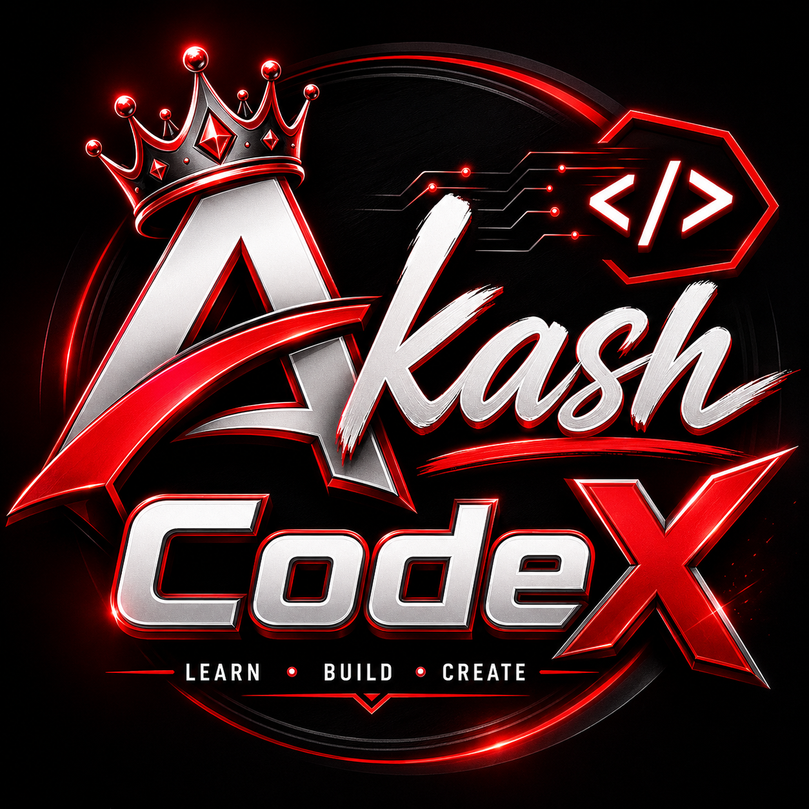

Discover how artificial intelligence is moving closer to the devices that generate data, enabling faster decisions, local intelligence, reduced latency, and potentially improved privacy.
Edge AI is the deployment of artificial intelligence models directly on or physically near the devices where data is generated.
The physical frontier of a network—smartphones, microcontrollers, embedded cameras, sensors, and factory gateways right at data origination.
Machine Learning algorithms, Convolutional Neural Networks (CNNs), and Transformer models trained to recognize patterns, detect objects, or infer intent.
Running pre-trained neural network parameters directly on local silicon (NPUs/GPUs) without streaming raw data to remote server farms.
The cloud is preserved for heavy model training and periodic aggregated updates, while real-time operational inference stays local.
From physical hardware signal to automated action in five seamless real-time steps.
Sensors, cameras, microphones, or industrial telemetry capture raw environment signals.
Pre-processing, filtering noise, and converting signals into normalized neural tensors locally.
The compact, optimized AI neural network computes probabilities and detects key targets.
Model produces an output score or classification (e.g. Person Detected: 99.4%).
Device immediately triggers hardware actuator, alarm, brake system, or display alert.
Training involves feeding petabytes of data through massive neural networks over days or weeks to calculate optimal matrix weights.
Inference uses the already-trained model to make quick predictions on fresh input data in real-time right on local edge hardware.
Comprehensive technical comparison across critical operational dimensions.
| Feature | Edge AI | Cloud AI | Hybrid AI |
|---|---|---|---|
| Processing Location | Local Device | Remote Data Center | Local + Cloud Combined |
| Latency | Usually Low (<5ms) | Higher (50ms - 500ms+) | Flexible / Dynamic |
| Connectivity Requirement | Often Reduced / Zero | Always Critical | Application Dependent |
| Privacy Potential | Potentially Stronger | High Data Transmission | Balanced Policy |
| Compute Capacity | Limited by Silicon | Virtually Infinite | Synergistic Combined |
| Offline Capability | Full Capability | Zero / Limited | Partial Degraded Mode |
| Bandwidth Overhead | Minimal / Zero Raw Stream | High Stream Volume | Moderate Compressed |
Eight transformative reasons why industry is shifting intelligence to the edge.
Local processing eliminates round-trip internet ping delays, critical for brake safety and industrial robotics.
Sensitive facial, biometric, or medical data stays strictly inside local hardware boundaries.
Local inference continues reliably even during cell tower dropouts or remote subterranean operation.
Only high-level metadata or alerts are transmitted rather than raw 4K video feeds.
Guaranteed sub-millisecond execution for time-critical, high-frequency control loops.
System avoids single-point-of-failure vulnerabilities associated with centralized cloud outages.
Dramatically lowers monthly cloud compute API tokens and bandwidth egress billing.
AI continuously fine-tunes parameters to unique individual user habits right on the personal device.
Edge AI introduces unique engineering trade-offs that must be managed realistically.
Compact silicon cannot match server racks with thousands of dedicated GPUs.
Tight RAM and flash storage limits require fitting models within megabytes, not gigabytes.
Requires Quantization (FP32 to INT8), Pruning, Compression, and Knowledge Distillation.
Embedding dedicated NPUs into millions of physical edge units increases bill-of-materials cost.
Deploying firmware or weight updates across millions of remote dispersed nodes is complex.
Edge devices can be physically stolen, tampered with, or subjected to side-channel analysis.
Battery-powered devices require strictly managed milliwatt power draw and passive heat dissipation.
Diverse silicon architectures (ARM, RISC-V, x86, Custom NPUs) create compilation friction.
Monitoring health, drift, and logs across thousands of field devices requires specialized tooling.
Clear technical answers to essential Edge AI questions.